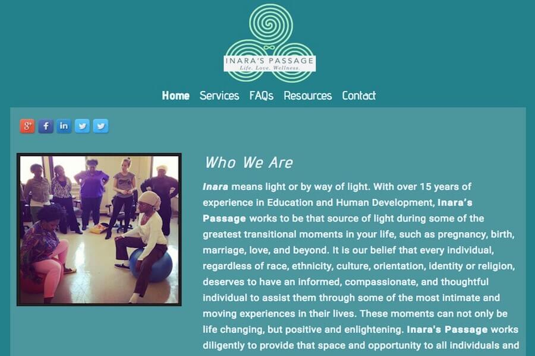
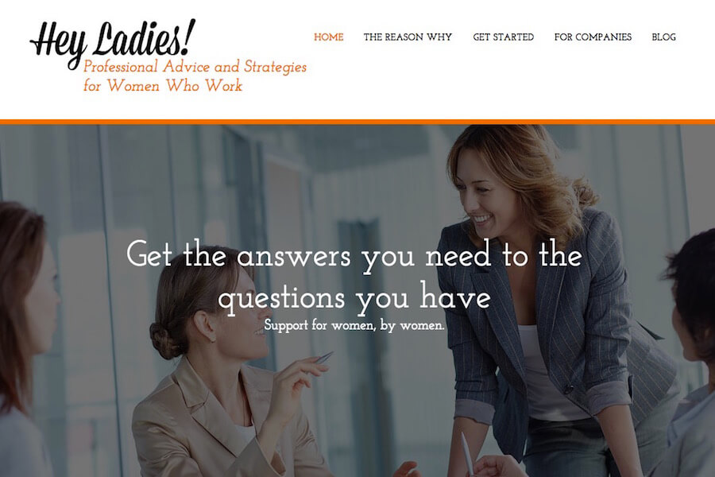
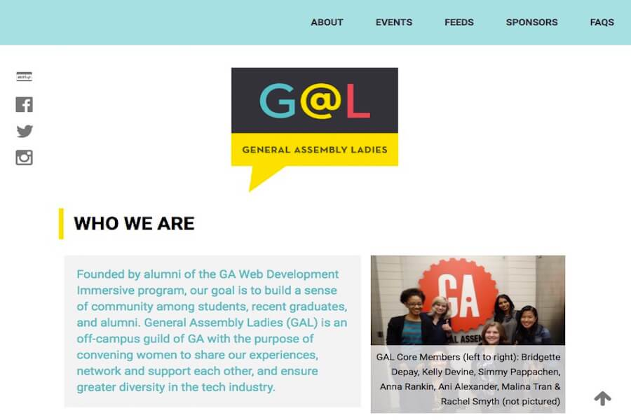
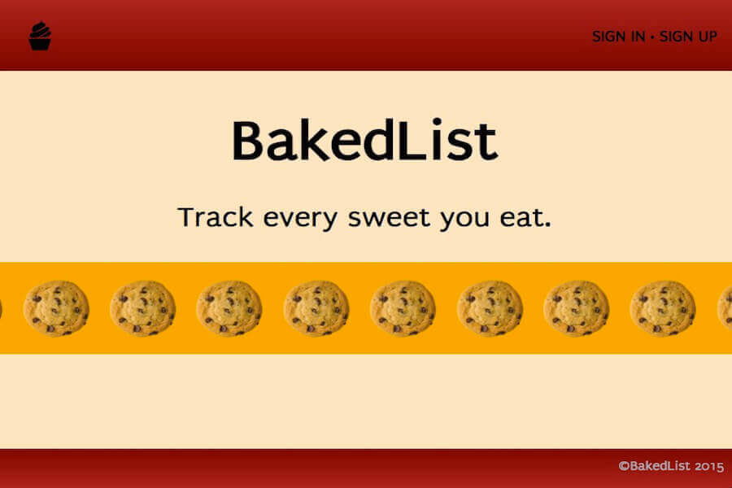
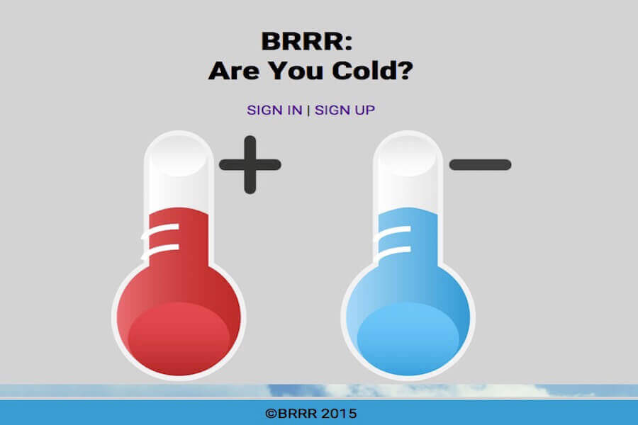
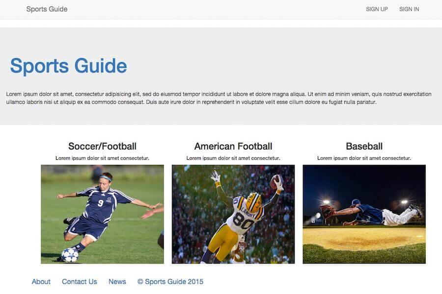
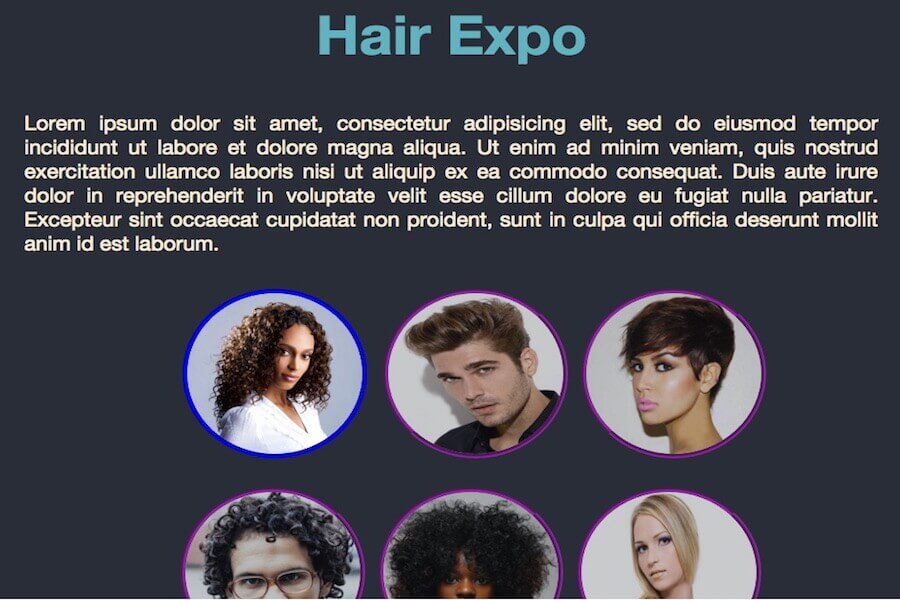

Portfolio

GirlsKorner,
Client Project
GirlsKorner offers resources & coaching services for girls aged 13-21

Inara's Passage,
Client Project
Inara's Passage provides wedding officiant & pregnancy services

Hey Ladies,
Volunteer Project
Hey Ladies offers professional coaching & resources to women

GA Ladies (GAL),
Volunteer Project
GAL ia a group of General Assembly Web Development Immersive alumni

BakedList,
Final Class Project
A Ruby on Rails sweets-tracking & recipe-finding application


